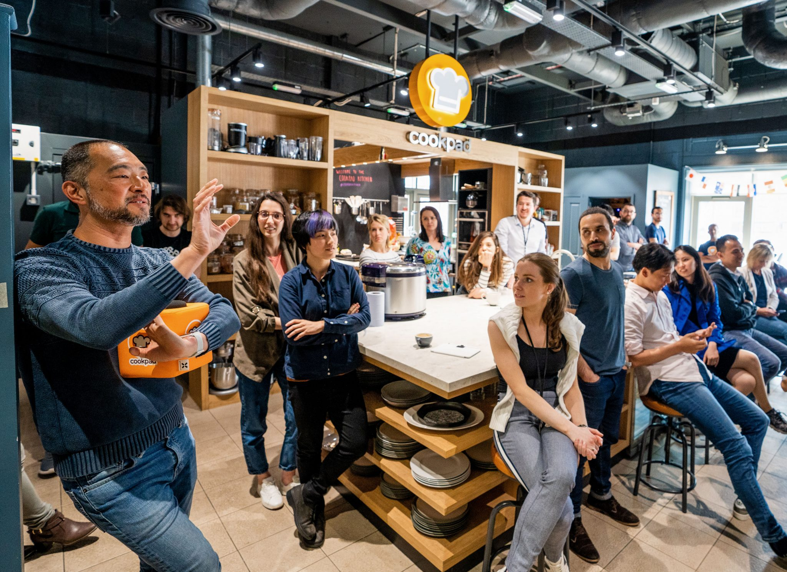
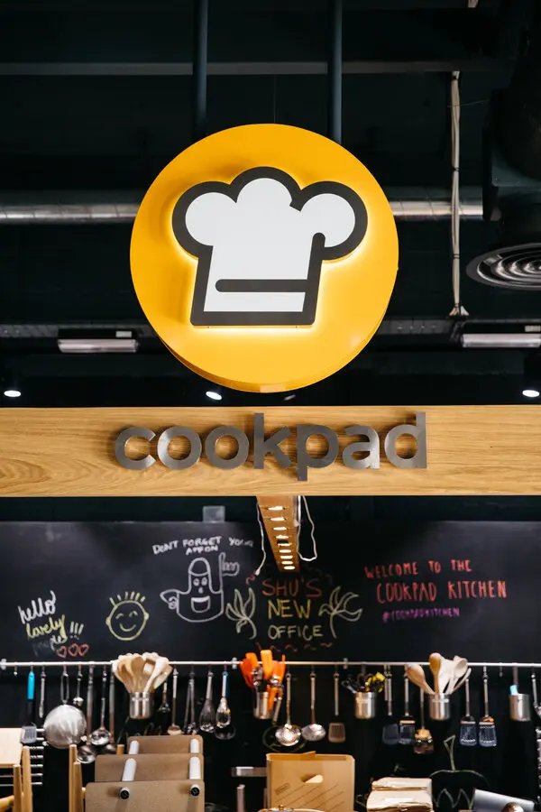

Somos una comunidad de cocineros caseros, de personas que disfrutan cocinando y compartiendo sus logros en la
cocina con los demás, y personas que recurren a Cookpad para buscar recetas y consejos y establecer
conversaciones en torno a la cocina diaria.
Uno de los factores diferenciales con otras plataformas es que todo el contenido disponible en Cookpad es
generado por los usuarios y está disponible para cualquier persona que visite la web o use nuestra aplicación.
En algunos países, como España, Grecia, Rusia, Indonesia o Taiwán existe también la opción Premium Service, un
servicio de suscripción.

Durante la pandemia, la cocina casera creció drásticamente y es una tendencia que sigue en aumento, asegura
la también Executive Officer de Cookpad. En esta fase, las búsquedas de recetas en la comunidad se dispararon,
multiplicándose por tres, especialmente durante el confinamiento. Pero además del crecimiento, fue muy
interesante ver cómo las búsquedas cambiaban según el nivel de confinamiento en nuestro país. La gente empezó
a buscar cómo hacer pan casero, pan sin levadura, bizcocho sin huevo y pastel sin harina, comidas baratas y
rápidas... Las búsquedas reflejaban los ingredientes que escaseaban en ese momento y también el hecho de que
había que cocinar mucho más con todas las familias teletrabajando o estudiando desde casa.
Por último, cabe resaltar la obviedad de que, en estos casos, cocinar no es solo cocinar. Desde Cookpad
parten de la idea de que la cocina, en el día a día, debe ser divertida. Para conseguirlo nos hemos esforzado
en crear un espacio amigable, estimulante, colaborativo y seguro sobre el que construir una comunidad en la
que todos se sientan bienvenidos, y siento que hemos logrado crear ese ambiente y fomentar ese espíritu.
Cocinar es un acto de amor, proporciona disfrute y une a las personas. Cocinar también permite descubrir otras
culturas y tradiciones, y en este sentido rompe barreras.

Esta cuestión tiene su miga porque, como añade, detrás de cada receta en Cookpad hay una persona en algún
país del mundo que ha querido compartirla y contar su historia y esta receta que llega a otras personas,
agradecidas y dispuestas a reproducirla en sus cocinas y, si desean, subir la foto de su propia versión.
La creatividad de nuestros miembros y su deseo de ayudar a los demás nunca dejan de asombrarnos y gracias a
su implicación con la comunidad, algunos han mejorado su salud, otros se han volcado en ayudar a otros,
sumándose a iniciativas solidarias, otros ponen su energía en compartir ideas para reducir el desperdicio de
alimentos y otros participan en eventos online, cocinando el mismo plato juntos con usuarios de otros países.
Bienvenido sea, que falta hace y buen provecho.